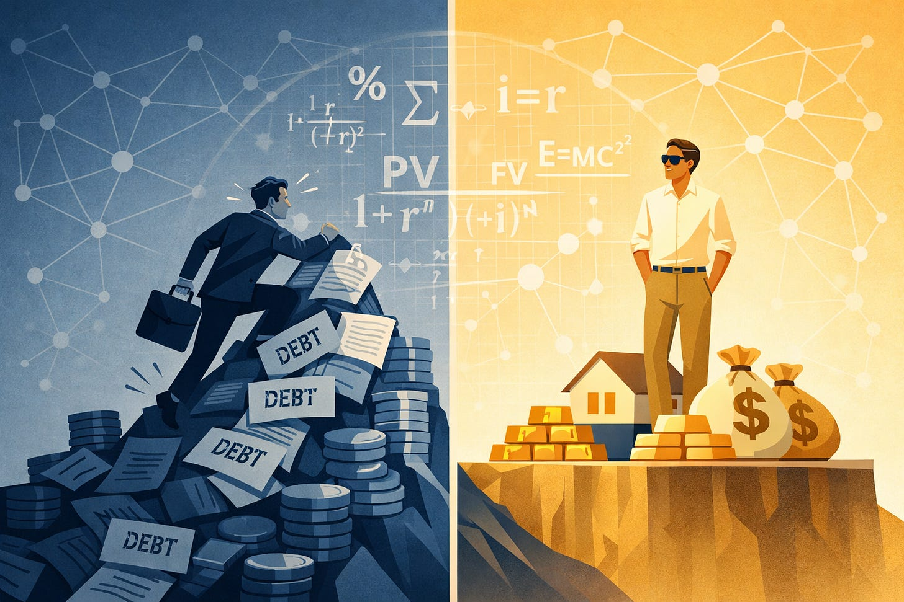

Everyone uses money. Everyone depends on it. Yet almost no one is taught how it actually works.

“The real problem of humanity is the following: we have Paleolithic
emotions, medieval institutions, and god-like technology.”
— E. O. Wilson
Everyone uses money. Everyone depends on it. Yet almost no one is taught how it actually works.
This isn’t because people are incapable of understanding it. It’s because the monetary system operates quietly in the background, shaping incentives and outcomes without calling attention to itself. Like fish in water, we live inside it, rely on it, and rarely examine it – until something goes wrong.
Understanding this system matters. I believe it is one of the most important things a person can learn.
Many of the problems we argue about today – inequality, housing costs, job insecurity, debt, political polarization, social tension – are usually treated as separate issues. They are not. They are downstream effects of the same underlying structure: how money is created, how debt works, and how interest rates shape behavior over time.
This essay is not written to discourage effort or participation in society. Quite the opposite. People should continue to work, build, create, and try. Individual choices still matter.
But individual effort alone cannot fix a system whose rules quietly push outcomes in predictable directions.
If we want a society that is stable, fair, and capable of reform, then more people need to understand the rules that govern it. Not to assign blame, but to make better choices – both personally and collectively – about what should be changed.
That begins with a simple question:
How does our monetary system actually work, and what incentives does it create?
This is a long essay, because the system it describes is complex – and because understanding it requires seeing the same forces at work in many places.
“The process by which banks create money is so simple that the mind
is repelled.”
— John Kenneth Galbraith
Most people think money comes from taxes or from the government printing it. That is not how the system actually works.
In modern economies, money is created mainly through loans.
When a bank makes a loan, it does not lend out existing money in the way most people imagine. It creates new money. That money enters the economy as debt. And that debt always comes with interest.
This matters because interest compounds over time.
When money is created as a loan, the principal exists, but the interest does not – yet. So where does the money to pay interest come from? There are only three possibilities:
New loans that create additional money at lower rates
Economic activity that generates enough surplus to cover it
Defaults (bankruptcies) that wipe obligations away
For the system to remain stable, it must continuously expand, refinance, or allow failure. This is not a theory. It is a mathematical property of debt-based money.
This system became global after 1971, when the United States ended the dollar’s convertibility to gold.
Before that point, money was tied – loosely and imperfectly – to a physical constraint. Afterward, it was tied entirely to debt and policy decisions.
This change brought real benefits. Governments could respond to crises more easily. Credit could expand to meet real needs. The system became more flexible.
But it also removed an anchor.
Without a physical constraint, money creation became dependent on policy judgment and debt expansion. Continuous intervention became more necessary. And it became harder to know when to stop. Boom-bust cycles became more frequent.
Interest is small at first. Over long periods, it begins to dominate everything.
Because interest compounds, old debts are usually paid with new debt. Households refinance. Companies roll over loans. Governments issue new bonds to service old ones.
For decades, this worked because interest rates kept falling. From the early 1980s until 2008, refinancing became easier and easier. Payments went down even as total debt increased.
In 2008, that process hit a limit. Interest rates were pushed close to zero. There was nowhere left to go.
Since then, policymakers have relied on emergency measures, asset purchases, and repeated interventions to keep the system functioning. These actions stabilized markets – but they also changed who bears risk, and who does not.
“There is no means of avoiding the final collapse of a boom brought
about by credit expansion.”
— Ludwig von Mises
Interest rate changes do not affect everyone equally.
People who own significant assets are largely insulated. They have collateral. They have savings. They can wait. When rates fall, the value of their assets tends to rise. When rates rise, growth may slow, but ruin is rare.
People who live off wages experience something very different.
When rates rise, debt payments increase. Refinancing becomes harder. Jobs disappear. Bankruptcies rise. Small shocks become crises.
When rates fall, asset prices rise faster than wages. Housing becomes less affordable. The cost of living rises, even if pay does not.
The same policy that feels like fine-tuning to one group can feel like an existential threat to another.
This asymmetry is not accidental. It is built into the structure of a debt-based monetary system governed by interest rates.
At this point, it may look like we are discussing separate issues: debt, interest rates, jobs, asset prices.
We are not.
These are different expressions of the same underlying mechanism. Money enters the system as debt. Interest compounds over time. Interest rates shift risk unevenly across society. Those dynamics appear wherever money touches human life.
“Power is not only what you can do, but what you can refuse to
do.”
— James C. Scott
In any negotiation, power belongs to the side that can afford to wait.
Most workers cannot wait. Rent, food, healthcare, and debt impose deadlines. As a result, many people must accept the jobs that are available, at the wages that are offered, even when the terms are bad.
People with capital can wait. They can delay hiring. They can automate. They can outsource. Their money continues to generate returns even when they do nothing.
Everyone faces biological needs. But the monetary system determines how much buffer exists between constraint and crisis. In the current system, that buffer is distributed very unevenly. Some people operate with years of runway. Others operate with days.
This creates short-side power in labor markets. Workers are under time pressure. Employers are under much less.
“Bad jobs” exist not because employers are cruel, but because workers often lack the leverage to refuse them.
In theory, wealth should flow to those who create the most value. A transformative idea could come from anyone. Impact should matter more than starting position.
In practice, outcomes cluster around proximity to existing wealth and power.
This happens because financial relationships form networks, and advantages compound. People with assets can borrow cheaply against what they already own. That borrowing generates more assets, which unlocks even cheaper credit.
At the individual level, this mechanism can be productive. Risk is taken by those making the decision.
At the system level, when some people begin with assets and others begin with nothing, the same mechanism creates a structural divide. One group borrows cheaply and compounds gains. Another pays more to borrow and spends income servicing debt instead of acquiring assets.
The loop repeats.
Over time, most people cycle through debt. A smaller group remains persistently net-positive. Individual exceptions exist, but the statistical pattern is clear and structural.
This is not about morality. It is about starting position and compounding.
The system rewards proximity to capital more than it rewards impact or innovation. This is a design choice, not a natural law.
Financial advisors like Dave Ramsey offer sound personal guidance: avoid debt, live below your means, invest early.
This advice works for individuals. It can help people climb out of debt and build wealth. But it cannot work for everyone simultaneously.
If money enters the system as debt, then someone must carry that debt. If everyone tried to be debt-free at the same time, the money supply would contract. The system depends on most people cycling through debt while a smaller group remains consistently net-positive.
This is not a moral failure. It is a mathematical constraint. Individual discipline cannot overcome structural design.
Taxes are not neutral. They change behavior.
We tax cigarettes to reduce smoking. We tax fuel to reduce driving. We give subsidies to encourage certain actions.
Yet we tax labor more heavily and more consistently than almost anything else.
Wages are taxed immediately. Payroll taxes apply no matter how thin someone’s margin is. There is little room for deferral or avoidance.
Capital is treated differently. Asset gains are often untaxed until sold. Losses can be written off. Complex structures allow income to be shifted or deferred.
The result is simple: effort is taxed, ownership is favored.
This makes it harder to move from working for money to having money work for you.
Capital gains taxes also distort markets in quieter ways.
Because gains are taxed when assets are sold, people are encouraged to hold assets even when reallocating would make sense. Selling triggers a tax bill. Holding does not.
This reduces market liquidity and pushes prices higher. It rewards staying put over moving capital to better uses.
For wealthy families, even this friction often disappears. Assets passed at death receive a stepped-up basis. Accumulated gains are erased for tax purposes. Heirs can sell immediately without paying capital gains on decades of appreciation.
Once again, the benefits flow to those who already own assets. The costs fall on those trying to enter.
The tax code is not complex by accident.
Complexity creates entire industries. Companies sell software, compliance services, and optimization strategies that would not be needed under a simpler system.
Some of these companies actively lobby to keep the system complicated. It is profitable for them.
The same pattern appears in welfare systems. Fragmented rules and eligibility tests create bureaucracies that depend on complexity to survive.
This is economic waste. Real resources are spent navigating rules instead of producing value.
Simplicity threatens entrenched interests.
These structural issues interact with a deeper technological shift.
For much of the 20th century, higher productivity meant higher wages. Workers produced more and captured a share of the gains.
That link is broken.
Automation, software, and capital-intensive systems now produce more with fewer workers. Output rises. Labor’s share falls.
Yet we still tie survival to employment and tax labor as if it were scarce.
This mismatch creates instability. People are told to work harder in a system that increasingly needs less work to function. This will become increasingly apparent if the promises of artificial intelligence materialize.
“The greatest danger to liberty today comes from men who are too
powerful to feel the consequences of their decisions.”
–Unknown
Over time, these forces create dynastic outcomes.
Wealth compounds across generations. Children of wealthy families inherit not just money, but stability, networks, and protection from failure.
Mistakes are survivable. Risks are optional. Time horizons are long.
Those without wealth live differently. Small shocks can end careers or families. Failure carries lasting consequences.
The system is not formally hereditary. But it is structurally biased toward preserving existing positions rather than resetting each generation.
Struggle provides information.
People who experience economic pressure understand tradeoffs in ways that cannot be learned from theory alone. They know what it means when rent is due and savings are empty. They know the weight of choosing between necessities.
When people are insulated from failure, they lose access to that information. Over time, their understanding of how others live becomes abstract and inaccurate.
Success is attributed to merit. Failure is blamed on laziness or poor choices.
This distortion is not malicious. It is predictable.
But it is also dangerous.
Children born into wealth often do not come to understand the hardships that others face. Yet they often grow into positions of power – positions where they make decisions that shape other people’s lives. This is not a claim about individual character; many wealthy people are thoughtful and well-intentioned.
Their lack of understanding does not necessarily make them cruel. But it can make them callous without knowing it. Policies that look reasonable from a position of security can be devastating to those living on the edge. What feels like minor belt-tightening to one group can mean homelessness or hunger to another.
This pattern repeats throughout history. Dynasties grow distant from the lives of ordinary people. Rulers make decisions that compound suffering without recognizing it. Resentment builds. History shows that systems which lose touch with the lives of most people tend to become unstable. When feedback is ignored for long enough, correction often comes in disruptive and destructive ways – possibly through violent revolution.
That outcome is catastrophic for everyone. Wealth is destroyed. Institutions crumble. Social trust evaporates. Entire generations lose decades of progress.
It would be better to avoid this. Not out of charity, but out of self-interest. Stable systems serve everyone better than collapsing ones. A system that allows understanding to decay invites its own destruction.
Fairness does not require equal outcomes.
It requires acknowledging that all human life is equally valuable. It requires that the monetary system itself not create structural advantages or disadvantages based on circumstances of birth.
A brilliant engineer born to a poor family and a mediocre one born to wealth will have different outcomes – that is unavoidable. But fairness requires that the system’s rules not systematically favor one over the other based on starting position alone. Talent, effort, and luck will always create differences. The system should not add to them.
What is destabilizing is a system where some people are permanently insulated from risk while others are permanently exposed to it – where the rules themselves compound in favor of one group and against another.
“A system that works must be designed for the kind of people who
actually exist.”
–Unknown
There is another way to design this.
Imagine a system with:
A universal basic income at a subsistence level
A modest, broad asset or property tax
A small negative interest rate on idle money
There is no maximum wealth. Private property remains. Markets remain.
What changes is the ability to hold claims on shared resources indefinitely without participation.
A basic income reduces short-side power. People can refuse bad terms. Wages become more honest. Money is issued directly by the government treasury under clear fixed and permanent legal rules, rather than primarily through loans with centrally managed interest rates.
A small percentage-wise asset tax discourages hoarding and rent-seeking. Wealth must stay productive.
A negative interest rate encourages circulation instead of stagnation.
Together, these form a feedback loop. Excess at the top is gently pushed back into the system. Scarcity is softened at the bottom.
No constant tuning is required. No complex bureaucracy is needed.
This system does not abolish markets or private property.
It does not cap success or mandate equal outcomes.
It limits time-based accumulation, not effort or innovation.
Children still benefit from education and support. But no one inherits permanent dominance.
Each generation must contribute.
Our current system is not unstable because people are bad. It is unstable because incentives are misaligned and feedback is broken.
This is not a call for despair or disengagement. It is a call for understanding.
Better rules create better outcomes.
And systems that respect how humans actually behave are the only ones that last.